Connecting to The Things Network (TTN)
Outdated: this section documents The Things Network V2, which is no longer maintained. See the documentation for The Things Stack V3, or browse the V2 docs index.
The Things Network is about enabling low power devices to be used in long range gateways that connect to an open-source, decentralized network and exchange data with Applications. Learn more about the Things Network here. In this section, we’ll show how to connect the RAK5205 WisTrio Lora® Tracker to The Things Network (TTN).
1.First, connect the RAK5205 WisTrio LoRa® Tracker to your PC and open the RAK Serial Port Tool.
2."Select" the appropriate COM port and click “OPEN” button same with the image shown below. Read more on how to interface your RAK5205 with your computer in this document.
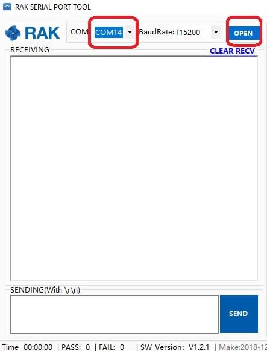
Registering Device #
Note In this section, it is assumed that you have already successfully connected your RAK LoRa® Gateways to The Things Network (TTN). If not, refer to the individual documentation of all the RAK LoRAWAN™ Gateways through here.
3.Now, go to the The Things Network (TTN) Website and log on.
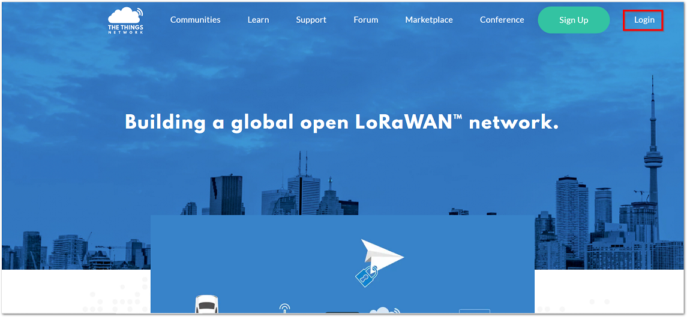
4.Choose “Console” located at the top right corner. Then, Click “Application”.
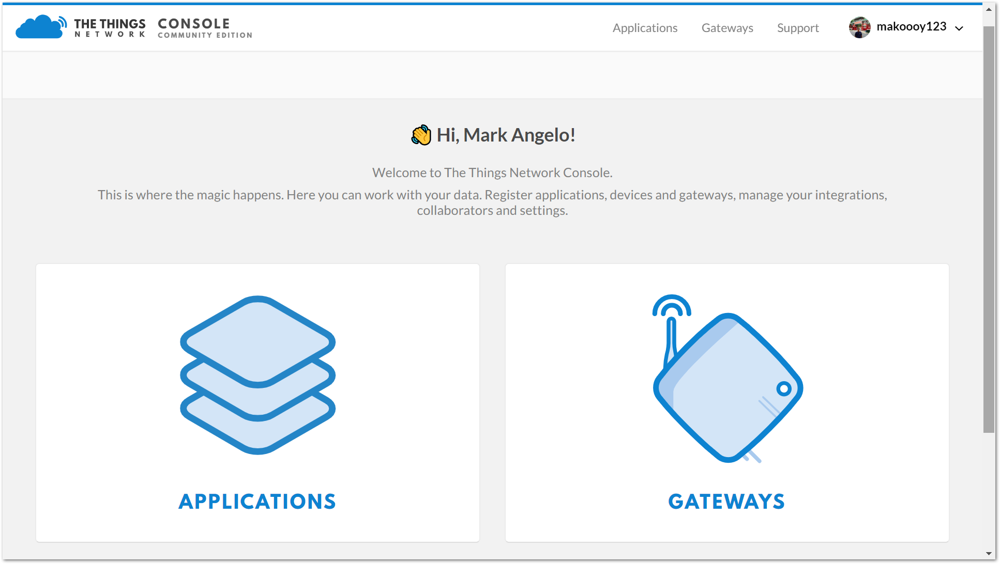
5.Press the “add application” button.
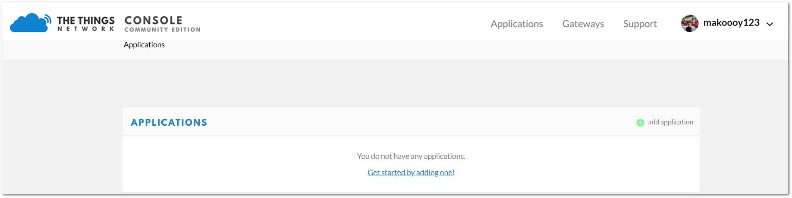
6.Create your own Application by filling in the correct parameters.
Note The Application ID is a unique combination of lower case, alphanumeric characters and nonconsecutive “-” and “_”.
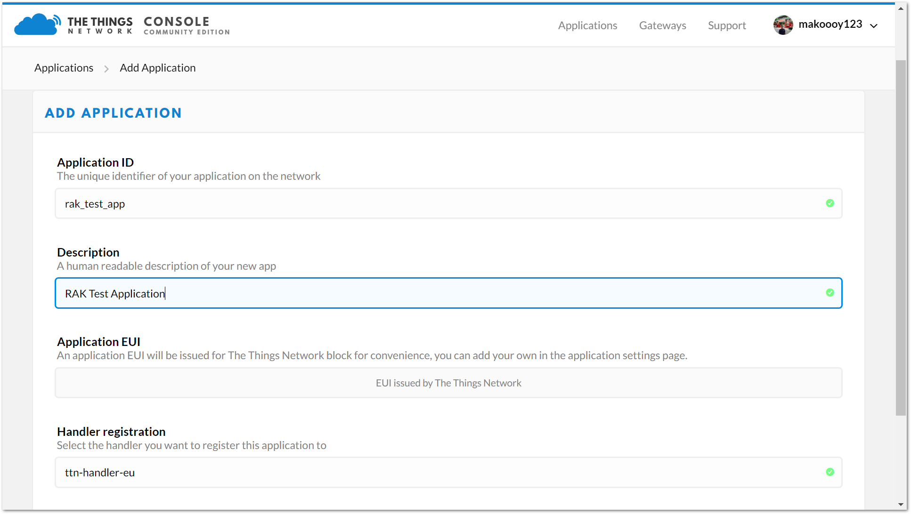
7.Then, press the “Add application” button at the bottom of this page, and you can see the following page:
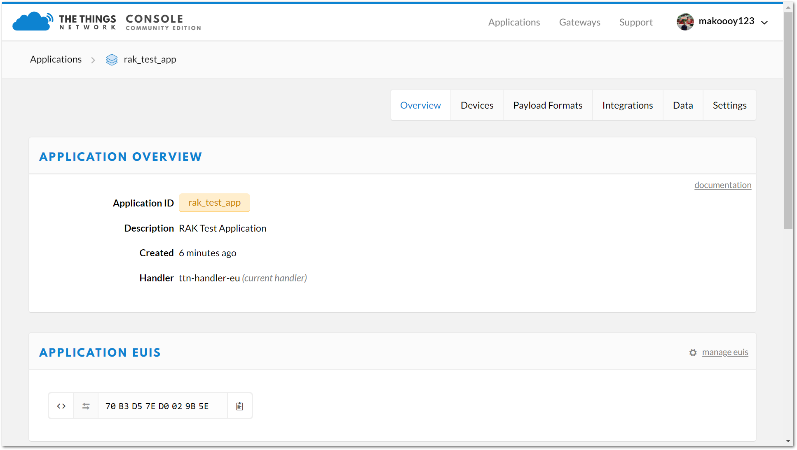
8.At the middle of this page, you can find the box named “DEVICES” and click “register device”.
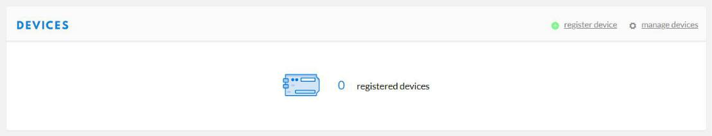
9.Fill in the “Device ID” . Click the icon in the “Device EUI”, then a code is generated automatically.
- You can get the “Device EUI” of your RAK5205 with the following command, which will display all node parameters:
at+get_config=lora:status
- In case you have had The Things Network (TTN) generate a new “Device EUI”, you can use the command below to import it into the RAK5205 configuration parameters (XXXX is the Device_EUI you want to update):
at+set_config=lora:dev eui:XXXX
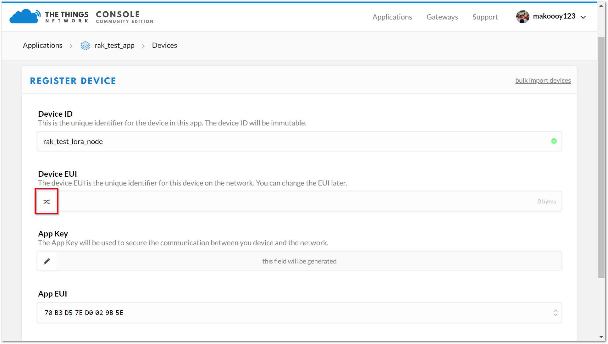
10.Then press the “Register” button at the bottom of this page to finish.
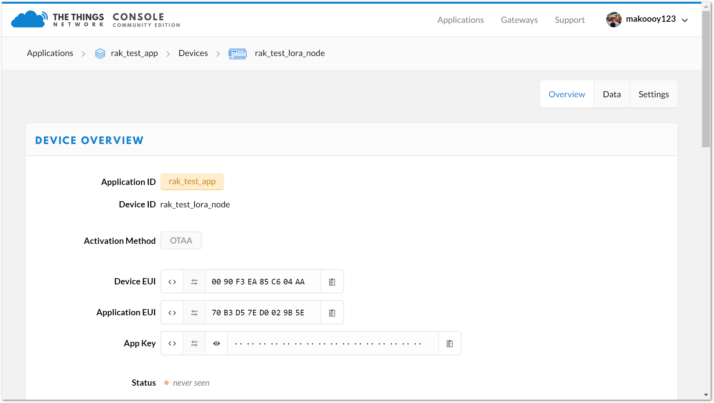
When you connect the RAK5205 Wistrio LoRa® Tracker to a LoRaWAN Gateway, we need some amount of security and trust to be established amongst them. There are two connection modes, and we distinguish between them using the criteria of security and ease of implementation. These are the Over-The-Air Activation (OTAA) and Activation By Personalization (ABP).
OTAA Mode #
According to The Things Network (TTN), Over-the-Air Activation (OTAA) is the preferred and most secure way to connect with The Things Network (TTN). Thus, it is chosen as the default method when registering a device. For configuring it you need the following three parameters: Device EUI, Application EUI and App Key. You can get them all from the Overview page.
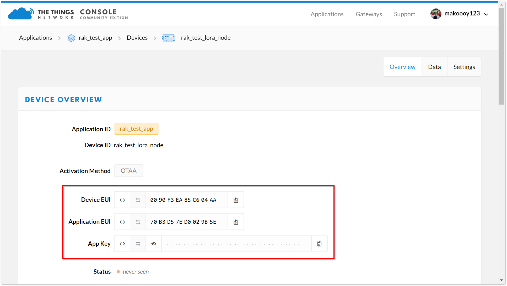
Now, let us configure the RAK5205 to work in OTAA mode in the EU868 band, as an example.
Note The default LoRa® working mode for the RAK5205 is LoRaWAN™ 1.0.2, while the default LoRa® join mode is OTAA, and the default LoRa® class is Class A.
1.Using the RAK Serial Port Tool, set mode to OTAA, device class to Class A and your LoRaWAN™ Region to your correct frequency band, with the following set of commands below. Remember to replace XXX with the your LoRaWAN™ region, see this link for your frequency plan.
at+set_config=lora:join_mode:0
at+set_config=lora:class:0
at+set_config=lora:region:XXX
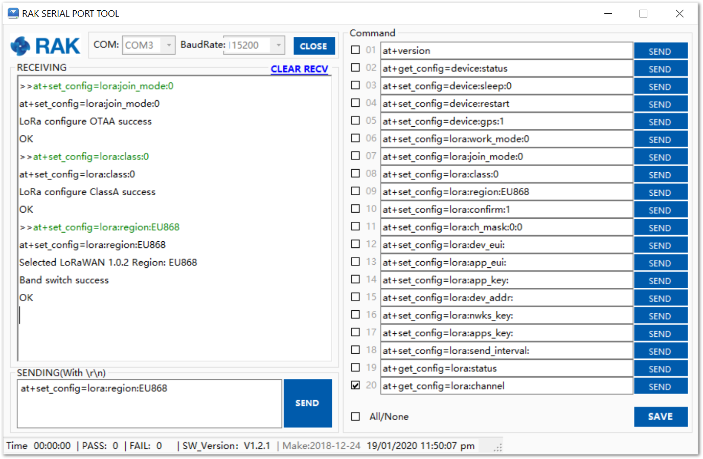
2.Now that the modes are set, enter the parameters: : Device EUI, Application EUI and App Key. Use the commands below. Remember to replace the “XXXX” with the corresponding parameter value for your particular case:
at+set_config=lora:dev_eui:XXXX
at+set_config=lora:app_eui:XXXX
at+set_config=lora:app_key:XXXX
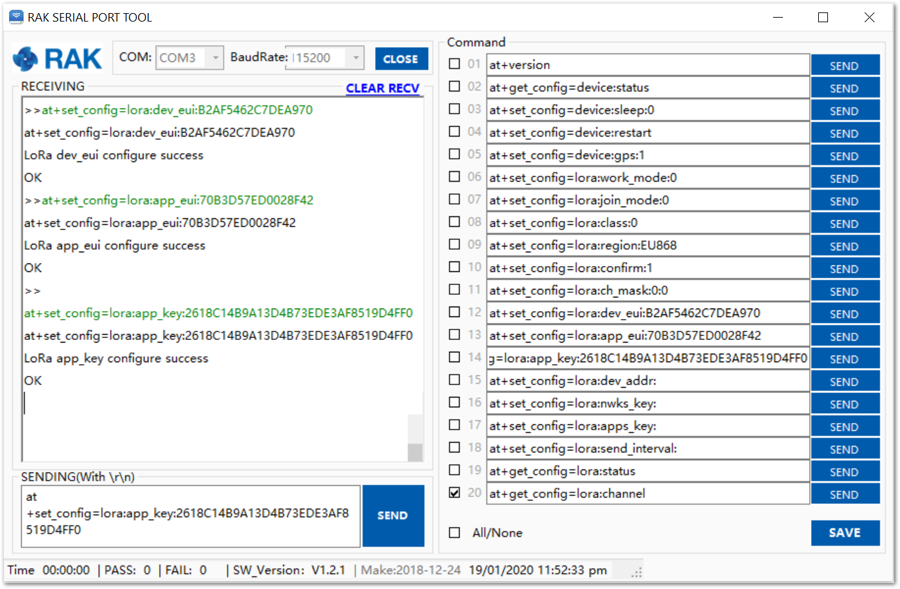
3.Finally, execute the join command:
at+join
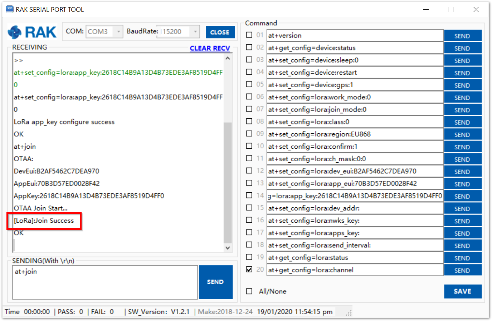
4.Test the connection by sending an uplink frame. Use the following as an example:
at+send=lora:1:12345678
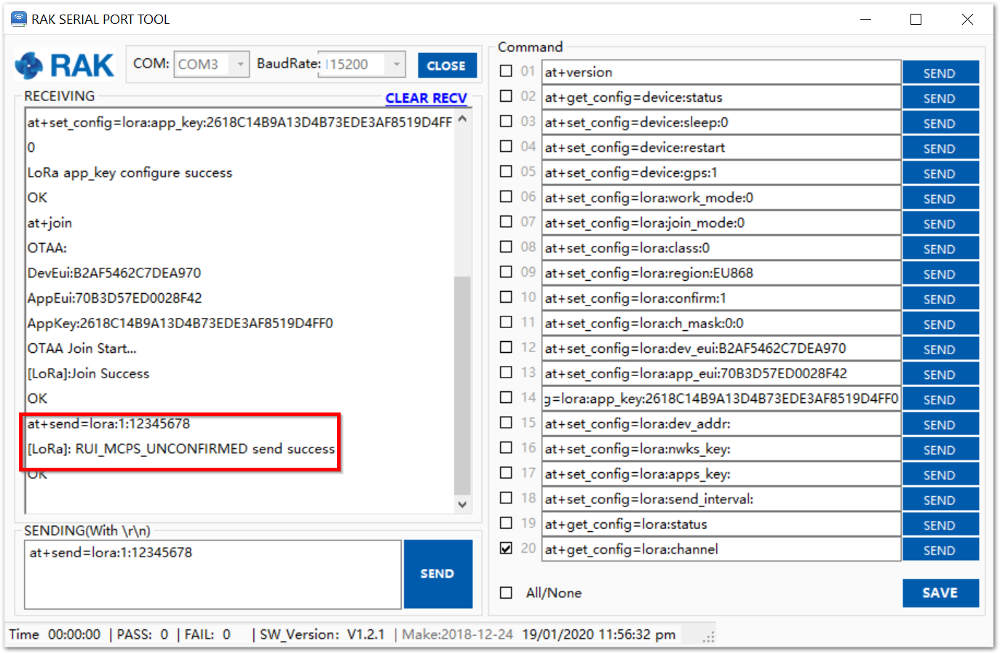
5.If you get a response in your TTN live data feed as in the figure below, then you are all set!
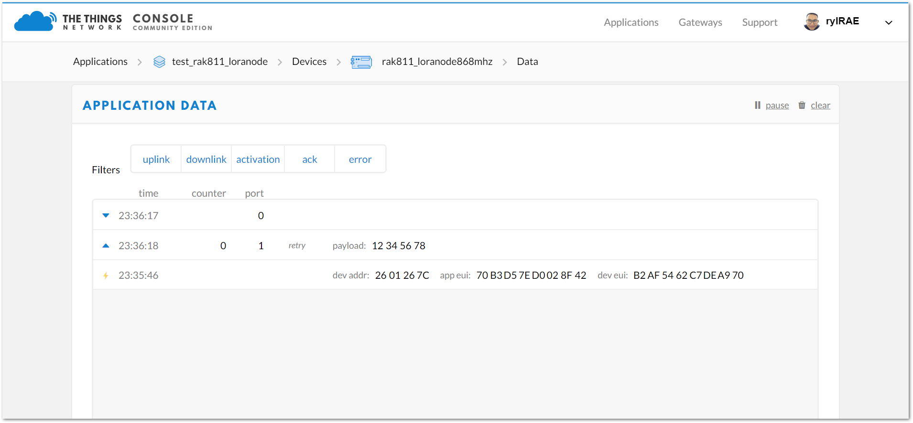
Great! That’s all about OTAA mode.
ABP Mode #
Authentication By Personalisation (ABP) is a LoRaWAN™ activation mode that enables manual configuration of encryption keys on the device and is capable of sending frames to RAK gateways without needing a ‘handshake’ procedure in exchanging keys unlike OTAA.
This is a mode best used for testing environments.However, it is not recommended for production, as it is less secure. In this section, we will go through the steps in connecting to TTN using ABP mode.
1.To start with, join the ABP mode by going to device settings then switch the activation method to ABP.
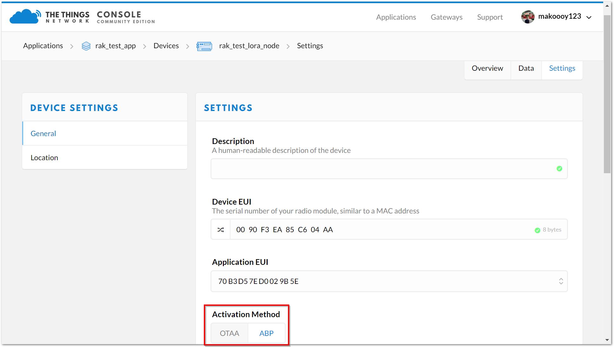
2.The Device Address, Network Session Key and App Session Key will be generated automatically by default.Save the mode change and return to the Device Overview page. You can copy the keys by pressing the button after the value fields marked in red in the image below:
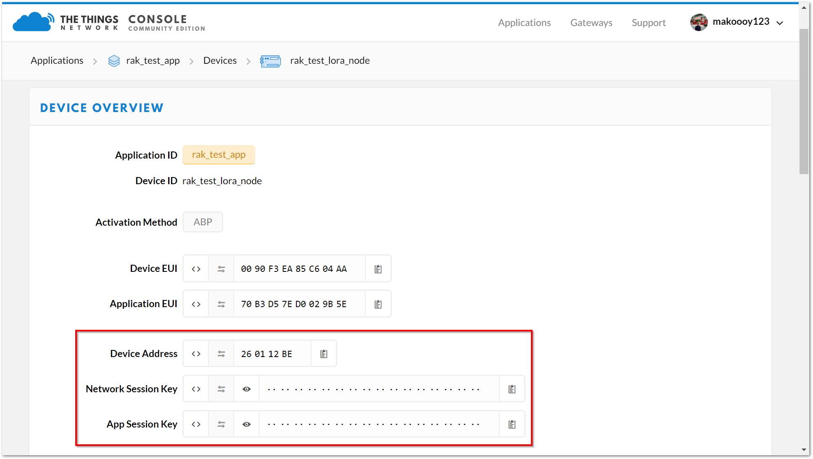
3.Now, we need to update the RAK5205 configuration. Open the RAK Serial Port Tool and type the command below to set these parameters: Activation Mode to ABP, Device Address, Network Session Key and Applicatio Session Key and your LoRaWAN™ Region to your correct frequency band. Remember to replace XXX with the your LoRaWAN™ region, see this link for your frequency plan.
at+set_config=lora:region:XXX
at+set_config=lora:join_mode:1
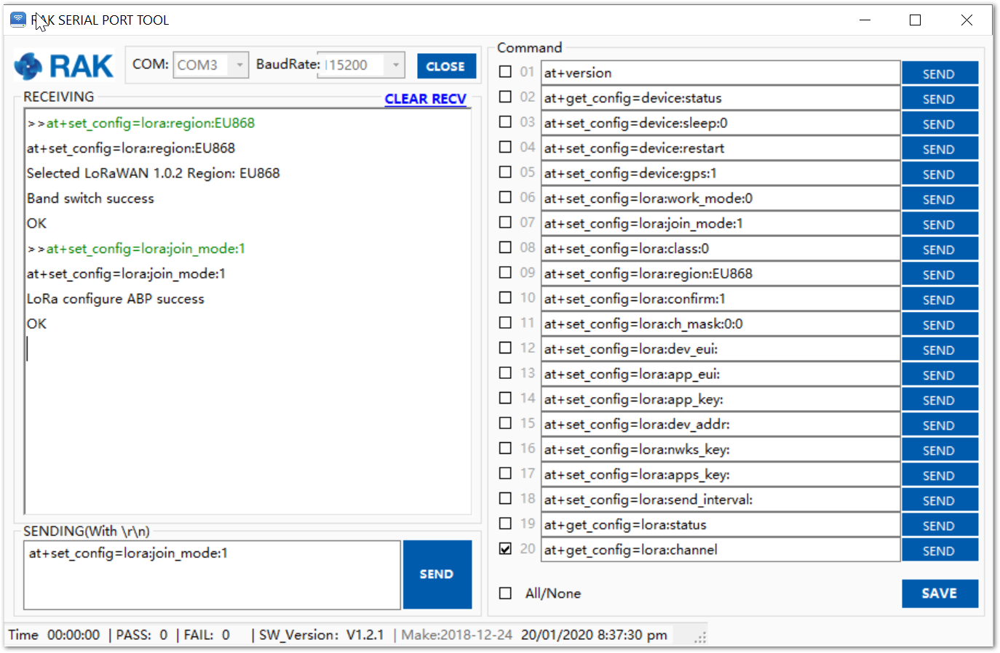
at+set_config=lora:dev_addr:XXXX
at+set_config=lora:nwks_key:XXXX
at+set_config=lora:apps_key:XXXX
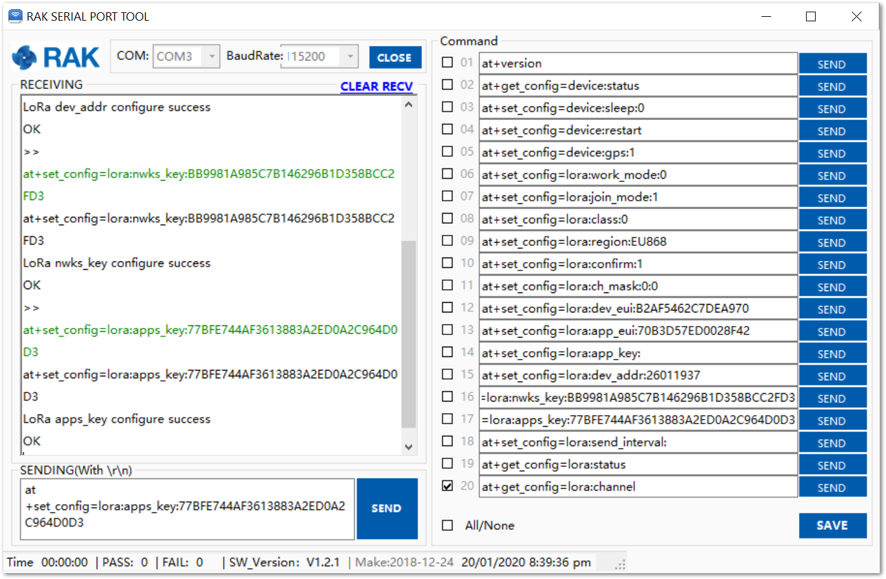
4.Then, join in ABP mode.
at+join
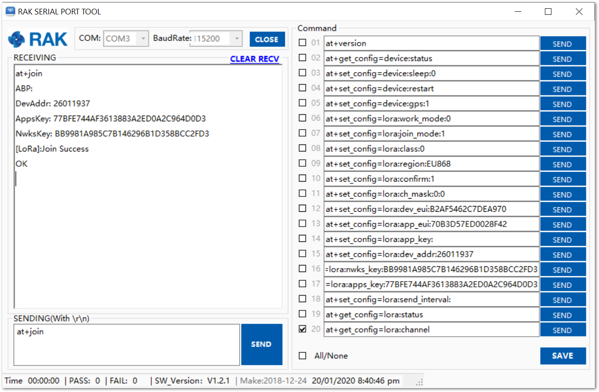
Note: It is actually unnecessary to join in ABP mode. But, it is a good practice to set this AT Command to validate the parameters set for ABP Mode.
5.You can test the connection by sending an uplink frame. Use the following as an example:
at+send=lora:1:12345678
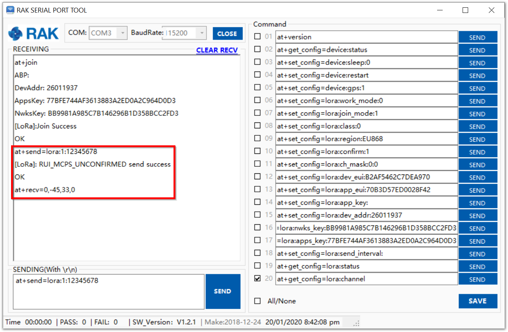
Great! Your node should now work in ABP mode.
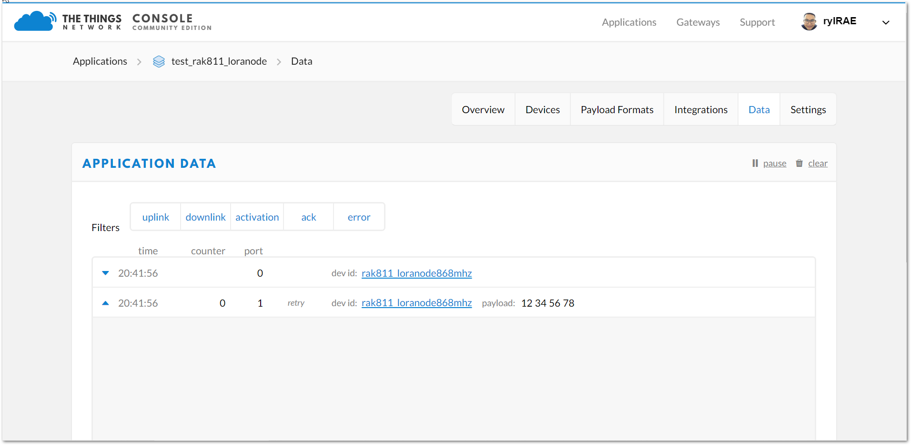
Optional Configurations #
You can also try other configurations which is supported in RAK5205 WisTrio LoRa® Tracker. Click through the guides provided below to learn more. Enjoy!
- Connecting to Chirpstack
- LoRa P2P Mode
- Cayenne Integration